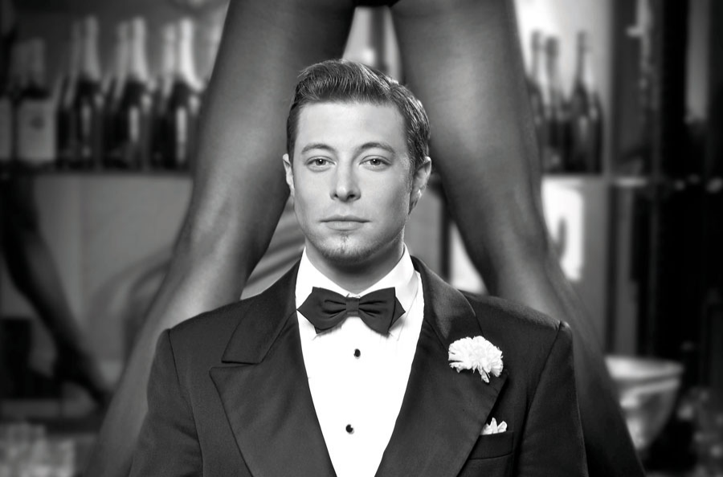

SON'S WISH Duncan James says he’s desperate to walk ‘unlucky in love’ mum down the aisle after she didn’t find a man on First Dates
DUNCAN James has a successful career, a teenage daughter and a happy relationship - but there's one thing he's still desperate to do.
The Blue singer, 42, would love nothing more than walking his mum Fiona, 64, down the aisle to marry the man of her dreams.

Duncan James desperately wants to see his mum fall in love Speaking exclusively to The Sun, he said: "She's been on her own for so long, and my biggest wish, more than anything, is for my mum to meet a really nice man and to find happiness and fall in love.
"Because I know desperately that's all she's ever wanted, but it's difficult I guess. She's been quite unlucky in love throughout her life, and she's just never found that right guy.
"I'd love to walk her down the aisle and see her get married. I just pray and hope she gets that opportunity. That would be everything for me."
Despite hitting it off with naval officer Eric, 61, he wasn't the one for her, and Fiona is still searching for Mr Right.
Duncan said: "I was hoping first dates might be the show she meets someone really nice, but it didn't happen."
When it comes to his own love life, the former Hollyoaks star is in a good place with his boyfriend Rodrigo Reis, despite coronavirus pandemic keeping them apart.
The couple, who have been together for two years, were separated for four months during the first lockdown, with Rodrigo stuck in Brussels and Duncan here in England.
Aden added she often put herself in compromising positions - including missing obligatory prayer times in the Islamic faith and agreeing to being draped with a pair of jeans in place of a headscarf. After the jeans shoot with American Eagle Outfitters, Aden said she "sobbed" in her hotel room.
While the campaign encouraged consumers to "find your style" - Aden said she felt she had lost her own.
The model usually chooses to wear longer skirts and dress styles as a visible marker of modesty - but she said swapping jeans for a hijab cheapened and compromised her act of worship.
Rodrigo then joined Duncan in England for a month, with the prospect of more time apart too much to bear.
Work then called and Rodrigo had to return to Belgium, but Duncan is hopeful they can reunite over Christmas.
The extended period at home earlier this year did have some perks for Duncan.
He was able to spend more time with his mum and his daughter Tianie-Finn, 15, than ever before.
The teen ballerina spent the entire six-week summer holiday with her dad for the first time ever, which Duncan described as "lovely".